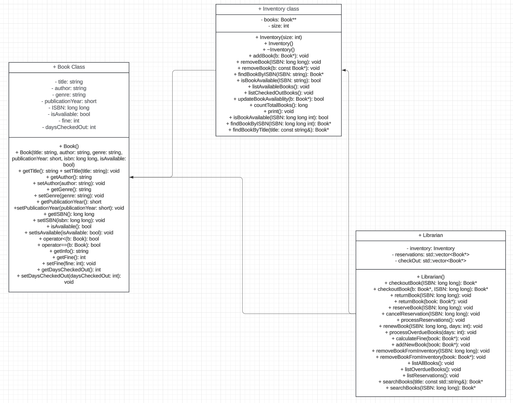

Project Overview
This program can be used to manage a Librarians inventory of books using a text based interface. This program is a lightweight way to manage books in a librarians inventory, and make it easier for them to manage reservations and to manage check-outs.
Design Specifications
This program uses three classes to achieve this, Books, Inventory, and Librarian. We chose not to use inheritance for classes as we did not think it would be necessary and that it would over-complicate the code for these classes. The Inventory does have an "accessory" class, Library Hash, which implements the HashMap which we will be getting into later. we chose to use a HashMap because of our prior knowledge of the structure and because it made the most sense for this use case, which we will go into more detail later about. All of our methods are based around editing attributes of the book class, and making it as easy as possible to do so. This implementation was the most efficient, by access time and simplest to use by the user that we were able to create for this circumstance.
Data Structures
The data structure which this program is centered around is the hash-map. This, in our view, was the best because of its low access time. we used the ISBN of the book, and based our hash value off of that, making for an implementation that is not adding on storage or another attribute to the book class, but only using a pre-existent one. If we had more time, one improvement we could make is the usage of a binary search tree so that in the unlikely case of two ISBN producing the same value it would not produce an error, which is one point of possible error in the project. This likelihood is low however, as we used a large prime number to base our HashKey off of, making it unlikely that diving it by a number would produce the same value.
Object Oriented Programming
This entire project is mainly based around the book class, which has instances created and then pointed too by the inventory class. This project uses some static methods to handle basic data processing, and some methods in the inventory class which correspond to methods in the librarian class to find and retrieve books from the Hash Map.
Pointers and references
This entire program is centered around the use of pointers to instances of Books, and using references of books to manipulate and know what user currently has a book checked out, and then track reservations through pointers to the reserved book.
File IO
The program uses a basic file input system to take the preexisting BookInventory.csv file and put the data from it into a 2d vector for data processing using streams.
Error Handling
This program uses basic error handling to determine if the file is not in the correct spot or if the user inputted something incorrect it returns null pointers when something is not found to be in the correct place, which produces an error message.
Testing
Most of the code in this project is basic boilerplate code, and much of the logic was handled in a few methods, so fortunately we were able to do only a bit of testing until we were able to do a full code test at the very end. That means we were able to test for full system errors, and handle them when they came up, and know how each class interacted with the other more efficiently.
Challenges
The biggest challenge in this project was managing pointers and managing references, as everything else we had some prior knowledge and experience on how to do. we had to learn how pointers interacted with each-other, and how to effectively the situation when multiple pointers are pointing to the same thing. we solved this by more learning, and choosing to center our project around pointers instead of references, which makes it easier to manage when multiple data structures are pointing to one book.
UML diagram
The UML Diagram is found in two places, both online at https://ultrapheonix.github.io/LibraryManagement/ and found here 
Code Snippets
The entire project is centered around this static hash method
This method is key to taking in the newly created book, taking its ISBN and then diving it by 4943, a large prime number, and then putting it at that index in the array.
Reflection
Overall, we found this project got us substantially more conformable with C++ and how to work with it. This project gave us a good base to build more experience off of. we appreciated how this project put into practice many of the things that we have been learning in CSC 104, and how it allowed us to grow in our overall coding ability, both in and out of C++.
Generated by